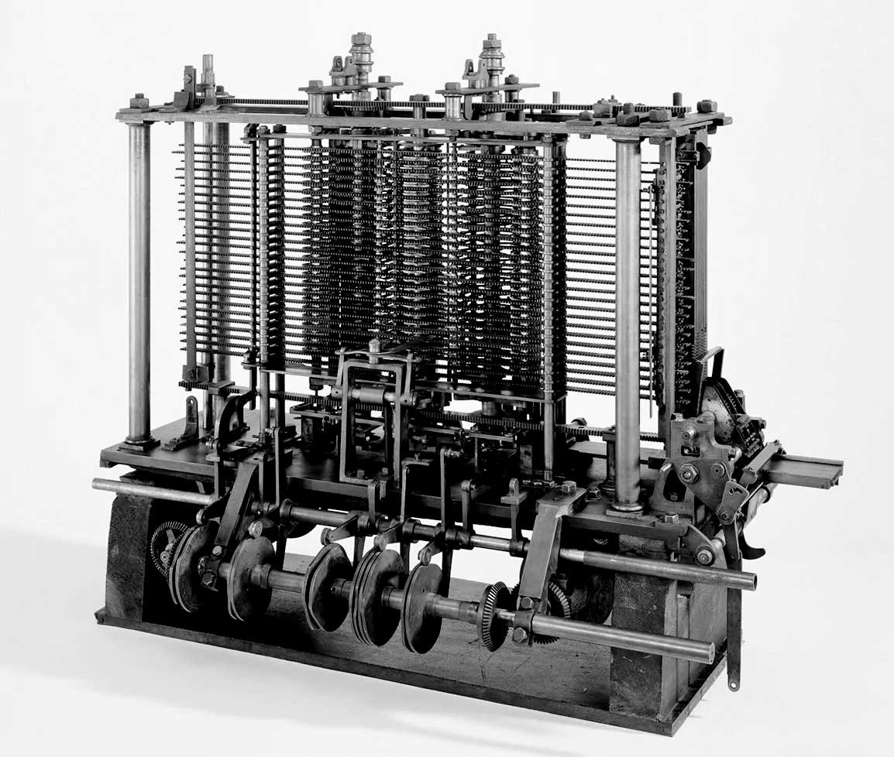
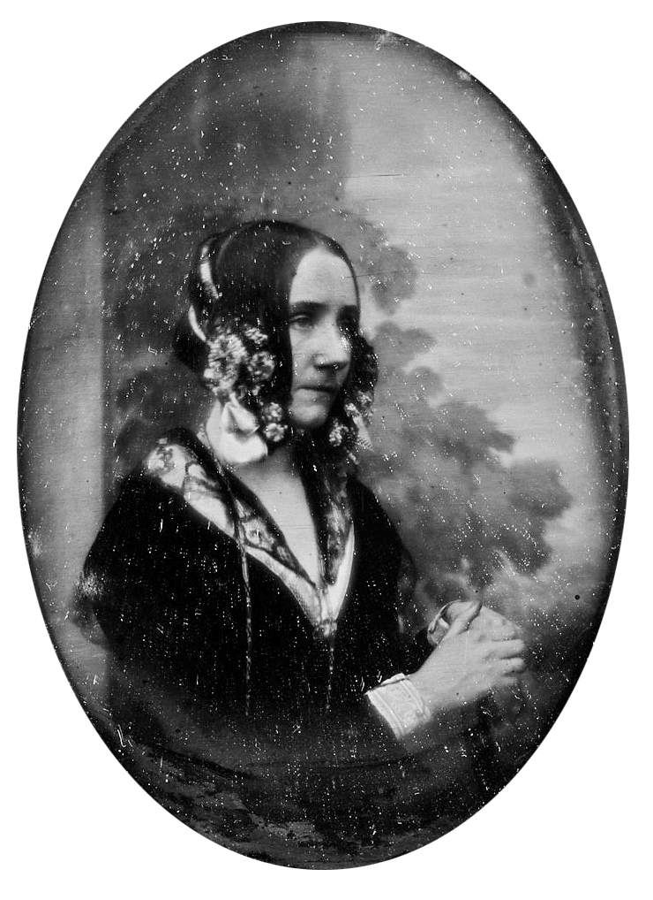
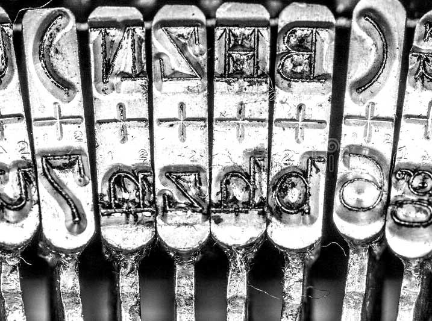

I was invited by Katrin Mayer to join in the investigation of her
speculative question of what a feminist perspective on code might look
like. We began collaboratively researching into internet history and
were especially interested in thinking about where code came from, how
it was made, how it looked and what it could look like. Code, computing
and programming are of course inextricably linked to the history of
technology and the people who operated it; turns out, they were women.
Conditioned to think of computing as a predominantly male domain, we
were fascinated to learn of its female origins thanks to excellent
research done on this topic in recent years, and are excited to see how
a feminist rewriting of computing history is well under way today.
1
Computer has two separate yet related meanings. A computer, from the
early 17th century and up until the first half of the 20th century,
referred to “someone who computes.” It was a person whom, by hand,
performed time-consuming and tedious mathematical calculations. As the
work of such Computers was akin to secretarial work, it was often the
work of women.

fig.01
Analytical Engine,
developed between 1833–1867
Amongst the earliest technological innovations that would change the
idea of what we now understand as “computing” was the Analytical Engine
by Charles Babbage. He is widely credited as the inventor of the machine
(the hardware, though a term coined much later) while his associate,
mathematician and Computer Ada Lovelace, was the brilliant mind that
conceived of its algorithms (what we now call software), left
unrecognized for a century.

fig.02
Daguerreotype of Ada Lovelace,
one of only two known photographs of her
2
The Analytical Engine would never be completed, but it represents the
conceptual dawn of the computer age. (...) the strikingly original
notes that Ada prepared to explain this new kind of machine would
presage the literature of computer science by nearly a century. To
demonstrate how the engine could calculate Bernoulli Numbers without
any assistance from a “human hand or head,” she wrote mathemathical
proofs that many scholars characterize as the first computer programs
ever written (...).
3
(...) she was the first to consider that a machine could have
applications beyond pure calculations (...).
But the Analytical Engine was yet too far ahead of its time, and while
more efforts were made to invent technology that would aid in computing,
data had to be processed and calculated painstakingly by hand. The
fields of mathematics, astronomy and physics were dependant on the work
of human Computers, many of them women. There was a widespread
biologistical belief that the meticulousness and patience necessary to
doing this kind of work were supposedly inherent “female” traits,
“women’s work.” Though it enabled women to enter the workforce and
strive toward some level of independence, the female prevalence in these
jobs was in truth mostly due to the fact that they were paid much lower
wages. It was when computing power was measured in “kilo girls”: 1000
hours of (female) computing labour.
4
These women quite literally mapped the cosmos, but their wages were
equivalent to those of unskilled workers (...), they earned barely
more than they would have if they’d worked in a factory.
fig.03
The Harvard Computers, a team of female mathematicians working to
process astronomical imagery and data at the Harvard Observatory in
Cambridge, Massachusetts, United States
5
Female hands lifted from pencils and slide rules to desk calculators
and switches, then relays and punch card tabulators. Coaxing
information into and out of the new machines was considered a woman’s
job, too, on the level with typing, filing documents, and patching
phone calls from place to place.
With time, typewriters, switchboards, computers: As women were seen as
mere “operators” of machines, their work was assumed to be “more
handicraft than science” and thus “more mechanical than intellectual”
6 . However, the
true merit of their work was just harder to spot than the more tangible
developments in engineering, a field mainly dominated by men. These
womens’ lasting accomplishment was in fact running, performing, and
virtually embodying what was becoming a global informational
infrastructure.
7
(...) For a few centuries, groups of women working in hives and
“harems” were the hardware (...). It’s the accumulation of all those
steps, executed simultaneously and collectively, that prefigured our
connected, caclulating, big-data world. Alone, women were the first
computers; together, they formed the first information networks. (...)
Long before we came to understand the network as an extension of
ourselves, our great-grandmothers were performing the functions that
brought about its existence.
I thought about how what I am seeing while programming this website
might relate to the work these women were doing. Using technology,
virtual models of thinking, working intimately with text-as-data. The
way code looks until this day has its origin here: “Typing” meant using
machinery that by its design determined its characteristic visuality.

fig.06
Monospaced letters on a typewriter
In the beginning, typewriters did not differentiate between the widths
of individual letters, and thus each letter was printed with the same
width. This meant that some particularly wide letters (like the m and
most uppercase letters) had to be squeezed to fit the space, and others
(such as i, l, I) had to be modified to fill out more space, as to not
cause too many gaps in the text.
the i
the l
the I
The necessary letter modifications resulted in a new genre of monospaced
typefaces. They turned out to be particularly useful for clearly
distinguishing letters, for writing data in an orderly manner, and for
helping the eye compare lines and layout. All of this is still vital
when writing and reading code, and so this choice of typeface has
prevailed in programming until today. I began to think about the
connections between text and code; letters and technology; between
typing, writing and coding. But before algorithms were written, typed or
punched, they were wired. It was women who were tasked with figuring out
the machine; and by doing so, they invented software programming.
8
No one really knew how to program the room-sized machine – the only
thing that existed were the wiring diagrams representing the physical
layout of the machine.
(...) As programming languages did not yet exist, they then physically
wired the program by fixing cables and flicking the machine’s switches
in the sequences they had developed. The positions of those switches
and cables were the program. By training themselves to program the
ENIAC, they invented and developed major computing concepts which are
still widely used by programmers today, such as nested loops for
example.
However, despite their doubtless pioneering innovations and the
significant importance of their intellectual work, they were not
credited. Instead, they were often portrayed either more as the
computer’s mechanics or pretty photo models hired to pose in front of
it.
9
When the ENIAC was finally unveiled to the public in 1946, there was
no mention of the women who made it run and effectively invented
modern programming. A 1946 New York Times article announcing the
“amazing machine,” only credits the male inventors John Mauchly and J.
Presper Eckert.
(...) the ENIAC Six (as the women who programmed the ENIAC became
known) were almost erased from history.
After decades of suffering disregard, they have finally started to
receive recognition in recent years. Punchcards, though not an entirely
new technology, were adopted from around 1930 to write and store
programs and data. Punchcards had already been used since the 18th
century to operate weaving looms and store pattern instructions –
another example of a traditionally female occupation at the intersection
between information technology and manual labour.
The job of the data typist emerged. This was what code looked like for
at least half a century: typed and punched, on paper.
This type of data storage transmits data through holes and non-holes,
through binary logic, on/off, the zeroes and ones that machines
understand. Of course, this is not how humans process information, so
some kind of translation needed to happen between human language and
machine language, between words and calculations. Grace Hopper, a female
computer scientist, effected a major breakthrough in how machines and
humans now talk to each other. She thought that code should be written
in human language.
10
Grace Murray Hopper was an American computer scientist known for
popularizing the idea that programming languages could be independent
from machines, and that an English-based language was possible. (...)
She recalls: “(...) It’s much easier for most people to write an
English statement than it is to use symbols. So I decided data
processors ought to be able to write their programs in English, and
the computers would translate them into machine code. (...) I would
say ‘Subtract income tax from pay’ instead of trying to write that in
octal code or using all kinds of symbols.”
(0) INPUT INVENTORY FILE-A PRICE FILE-B ; OUTPUT PRICED-INV FILE-C
UNPRICED-INV FILE-D ; HSP D .
(1) COMPARE PRODUCT-NO (A) WITH PRODUCT-NO (B) ; IF GREATER GO
TO OPERATION 10 ; IF EQUAL GO TO OPERATION 5 ; OTHERWISE GO TO
OPERATION 2 .
(2) TRANSFER A TO D .
(3) WRITE-ITEM D .
(4) JUMP TO OPERATION 8 .
(5) TRANSFER A TO C .
(6)
MOVE UNIT-PRICE (B) TO UNIT-PRICE (C) .
(7) WRITE-ITEM C .
Hoppers programming language FLOW-MATIC
Programming today carries her legacy. First and foremost, code is a
language, with syntax and grammar and vocabulary, plus some logic. We
can invent code much like a sentence, choosing the words that fit best.
Code is text both in the sense that it is composed by letters and that
it can be written and read.
When thinking about Hoppers legacy, language and the readabilitiy of
code, one might ask: Who actually reads the code? In the case of this
website, I write code for the browser to read, interpret, execute. The
browser is my audience. And not only does it speak a different language,
it has a wholly different way of reading. Did you know that spaces take
browsers just the same time to read as actual letters? Every glyph typed
– even if it is a blank space – results in information stored, and
corresponds to storage space or file size. This is why proper
programmers storetheircodewithoutspaces. The absence of a letter is not
nothing, blank space not 0.
The only humans reading the code I write is myself and possibly other
coders working on it with me, who are likely already tuned into
conventional abstractions and lazy shortcuts. Go to your favourite
website, right click, inspect the code. Can you read what’s going on? We
thought – but then how could code be written as humanly readable as
possible, even for those who don’t code? Please right click right here
and inspect this website’s code. Disclaimer: Writing code that is both
functional to browsers and readable to humans leads to many inefficient
workarounds and plenty of failure, because without keeping some symbolic
and syntactical conventions, browsers would quite simply not understand.
But maybe try it, climb all the way up, then travel down and go inside.
I hope it becomes clear how the code was written hand in hand with its
design and named by its content; a conceptional attempt – ambitious and
doomed – to place central emphasis on being able to navigate the website
just based on its source code, even through the non-coder’s eye.
The letters in code are data and thus stand purely for the information
of which symbol is used. But this information is manifested as letters
of a certain shape; they are not only read but seen, too. Every text
needs a typeface. This text, this code, this website needed a typeface.
Early typewriters usually came with one typeface built right into the
machine. The introduction of changeable typefaces moved the typewriter
one step closer to becoming a modern productive word processor and
precursor of today’s desktop computers. The IBM Selectric, released in
1961, was one of the first machines where fonts could be switched easily
and characters could be stored on a magnetic band, making it thus an
important bridge technology between typewriter and computer.
11
At the physical heart of the Selectric typewriter’s innovation was a
golf-ball-shaped type head that replaced the conventional typewriter’s
basket of type bars. The design eliminated the bane of rapid typing:
jammed type bars. And with no bars to jam, typists’ speed and
productivity soared.
One other innovation in the design—a changeable typeface—was borrowed
from a turn-of-the-century model, the Blickensderfer typewriter. (...)
By making the golf ball interchangeable, the Selectric enabled
different fonts, including italics, scientific notation and other
languages, to be swapped in. With the addition in 1964 of a magnetic
tape system for storing characters, the Magnetic Tape Selectric
Typewriter (MT/ST) model became the first, albeit analog,
word-processor device.
Less well-known is the Selectric typewriter’s role as one of the first
computer terminals. (...) A modified version of the Selectric, dubbed
the IBM 2741 Terminal, was adapted to plug into the System/360, and
enabled a wider range of engineers and researchers to begin talking to
and interacting with their computers.
Dual Basic was one of the many typefaces available for the Selectric. I
liked the typeface for its openness and clarity; also, it lacks the
usual modifications done on monospaced typefaces to fill visual holes.
It is almost like a text typeface only with equalized widths; it seemed
like an interesting in-between, unsure of which technology or age to
belong to.I found that in my investigation into all this, the harder I
looked, the blurrier the lines became between coding, writing and
typing. Might the distinction between them be simply determined by my
choice of typeface and machinery? For coding, I use a code editor and a
monospaced font, because it is easier for reading text that is code. For
writing, I use a proportionally spaced typeface, because it is easier
for reading text that is not code. In both cases, I press buttons, I
type.
The typeface you are reading and seeing now is Coda, designed as part of
this project. It is based on the framework of Dual Basic and modified in
two directions: In one, whitespace is taken out, and the monospaced
becomes proportional, much nicer for reading this text right now. In the
other direction, fictional serifs are added, to transform it into a
fully functional coding typeface.
Every letter and every way a letter’s line is made, drawn, chiseled or
printed has a historical and technological provenance. Today, typefaces
are produced digitally; they are software, they are code, thus
themselves written and composed of text. We can think about variables,
interaction, output. Code is text is type is font is code?
12
Something happened to the generation of programmers after Grace Hopper
and her peers. Although (...) women were being encouraged to pursue
programming as an alternative to secretarial work, the field was
quickly becoming far less welcoming to women than it had been even a
decade before. (...) Instead of running departments and advancing
their art, they were starting to cluster “at the lower end of the
occupational pool” (...).
Let me tie at least one of many loose ends here. You may rightfully
wonder: what happened to women programmers? Why is the image we have of
a programmer today automatically, reflexively, that of a man? I have
mentioned the wage discrimination that had been structurally present
from the moment women entered the modern workforce. There was also an
unwillingness by computer companies to provide models of work that would
help to balance childcare with a career. And as computing developed into
an increasingly important and profitable industry, the image, value and
requirements of the profession changed profoundly. A conference held in
1968 to address the so-called “software crisis” (a consequence of
programming’s difficulty to keep up with ever accelerating technological
progress) initiated a movement to re-brand programming as “software
engineering.” What sounds like a merely semantic change would however
come to have far-reaching implications, determining who could gain
access to the field and who couldn’t.
13
As such, it would be treated like a branch of engineering (...). This
change signaled a larger renegotiation of computing’s professional
status that would unfold through professional journals and societies,
hiring practices, and certification programs throughout the 1960s and
1970s. The more the discipline professionalized, the more it grew
implicitly masculine. The introduction of formal educational
prerequisites for programming jobs, for example, made it harder for
self-taught programmers to find employment – a change that penalized
female candidates, particularly those who might have taken time off
from school to raise children, above all. If computing “began as
women’s work,” writes historian Nathan Ensmenger, “it had to be made
masculine.”
Women faded from the profession. They were never truly gone, but harder
to be found. There were still women where networks were formed;
hypertexts created; knowledge organised; search engines built; message
boards hosted; connections drawn... But the landscape of computing, and
the idea of what it represents and how it’s represented, changed to such
an extent that female contributions were in many parts forgotten. This
is of course an incomplete history, told subjectively through the lens
of Katrins and my research, the books we read, the course of our
conversations, personal interests and own experiences. I never had or
knew of female programmer role models. The suggestion to code my own
website and not use Geocities for the homepage of my email writing club
came from my stepfather, a software engineer, and sparked my fascination
with what pure text can create. Though off to an early start,
programming was never in the realm of what I considered for my
professional future, because I simply never knew that someone like me
could be doing something like that. It took me a long time to realize
that if I wanted to see it, I needed to be it – or at least try to. I am
happy to see more women, now; again. This research has been instrumental
in discovering somewhat of a 1ineage.
This is the structure of the web’s native tongue, a programming language
called HTML. It is especially prone to endless fractal-like nesting of
elements inside and alongside one another. Structures are built with a
syntax that wraps, creates vessels, holds, embraces, stacks, plunges,
births. Thus, web code knows words and concepts of inheritance and
ancestry.
:first-child, :nth-child(n), :last-child, children, childrenNodes,
siblings(), nextSibling, parentNode, parent(), parents(),
parentsUntil(), gparent(), just to name a few. This is what it looks
like:
Thankfully, we do not write code on empty sheets of paper anymore. We
use code editors; fancy text programs that do all kinds of things to
help find our way in the matrix. There, lines have proven to be the most
efficient crumbs for finding back, connecting beginnings and ends.
Looking at our digital interfaces, lines often signal traces back to an
origin, to the first element, post, tweet or email.
We were also reminded of the warps in fabrics, vertically structuring a
textile piece that back in the day might have been programmed by
punchcards, ancestors to the code written here. The lines you can see on
this website visualise how the code of this website looks in the moment
of coding it. Its design mirrors its code, shows the process, reveals
its own making, in a way.
Lines have a way of accumulating the more we write, the deeper we dig
and the longer we go. It means something is building: software,
patterns, conversations, layers, story. These lines we can create
ourselves; they make a structure that we can use to crawl in between
hierarchies and chronologies; and they are the scaffold this website,
this text, this story builds on.
Footnote
1
Sophie Rentien Lando, Computers at Work – About Women in Computing,
Paris: Espace Ness 2019, p. 5, 6
2
Claire L. Evans, Broad Band –The Untold Story of the Women who made
the Internet, New York: Portfolio 2018, p. 21
3
Claire L. Evans, Broad Band –The Untold Story of the Women who made
the Internet, New York: Portfolio 2018, p. 21
3
Sophie Rentien Lando, Computers at Work – About Women in Computing,
Paris: Espace Ness 2019, p. 20
4
Claire L. Evans, Broad Band –The Untold Story of the Women who made
the Internet, New York: Portfolio 2018, p. 23
6
Claire L. Evans, Broad Band –The Untold Story of the Women who made
the Internet, New York: Portfolio 2018, p. 42
8
Sophie Rentien Lando, Computers at Work – About Women in Computing,
Paris: Espace Ness 2019, p. 62
9
Cory Stieg, “The Forgotten History Of The Women Who Programmed The
First Modern Computer”, 01.03.2022, last accessed: 08.11.2022
https://www.codecademy.com/resources/blog/eniac-six-women-programmed-computer/
10
Sophie Rentien Lando, Computers at Work – About Women in Computing,
Paris: Espace Ness 2019, p. 75, 77
11
IBM, “The Selectric Typewriter”, last accessed: 08.11.2022
https://www.ibm.com/ibm/history/ibm100/us/en/icons/selectric/
12
Claire L. Evans, Broad Band –The Untold Story of the Women who made
the Internet, New York: Portfolio 2018, p. 76, 77
Typeset in
Literata
&
IBM Plex Mono
time
 traveler
traveler